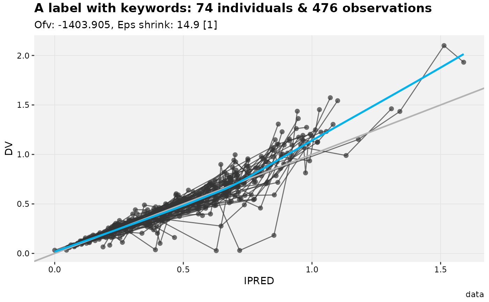
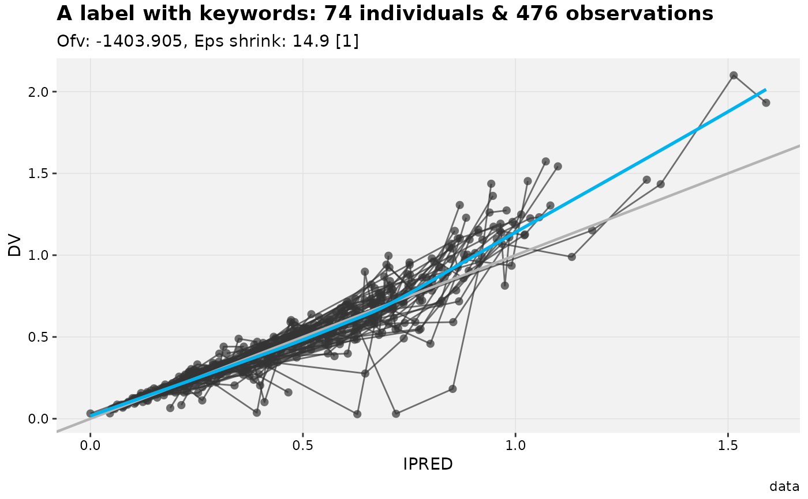

This function explicitly draw an xpose_plot and interprets keywords contained in labels.
# S3 method for xpose_plot
print(x, page, ...)Arguments
- x
An
xpose_plotobject.- page
The page number to be drawn. Can be specified as vector or range of integer values.
- ...
Options to be passed on to the ggplot2 print method.
Examples
my_plot <- dv_vs_ipred(xpdb_ex_pk) +
labs(title = 'A label with keywords: @nind individuals & @nobs observations')
#> Using data from $prob no.1
#> Filtering data by EVID == 0
# Using the print function
print(my_plot)
#> `geom_smooth()` using formula = 'y ~ x'
#> `geom_smooth()` using formula = 'y ~ x'
 # Or simply by writting the plot object name
my_plot
#> `geom_smooth()` using formula = 'y ~ x'
#> `geom_smooth()` using formula = 'y ~ x'

# Or simply by writting the plot object name
my_plot
#> `geom_smooth()` using formula = 'y ~ x'
#> `geom_smooth()` using formula = 'y ~ x'
